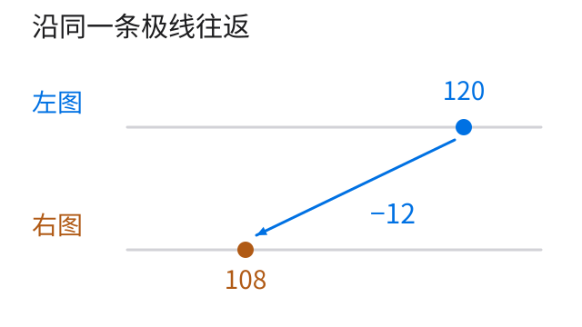
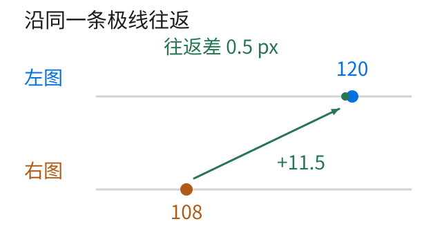
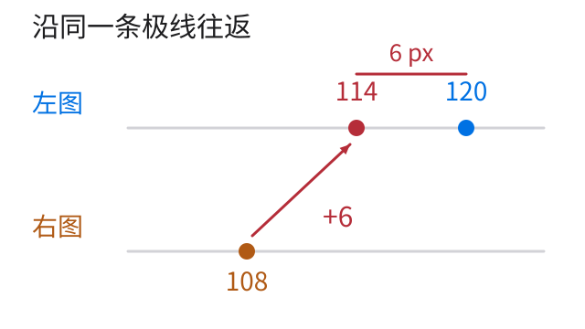

双目网络可以给大部分像素预测一个视差值。稠密的输出适合显示，但一块无纹理的墙、一排重复窗格也能得到看似连续的颜色。左右一致性提供了一个独立于显示效果的检查：换个方向找对应，是否还能找回原点。
往返一次，先写明符号
在已经完成极线校正的图像上，假设左图某点的列号为 xL，右图对应列为 xR。把左视差定义为 dL = xL − xR，那么从左向右查找的位置是 xR = xL − dL。再约定右图也存“从右往左要加多少”的正数 dR，返回位置便是 xR + dR。往返偏差的绝对值就是 |dL − dR|。
并非所有接口都用这个符号。有的右视差直接定义为 xR−xL，此时返回左图要减去这个有符号值。把符号约定写在变量旁，再用一对手工选出的对应点试算，比盲目给右视差取绝对值可靠。获得右向结果的具体方法还要服从模型的输入方向与训练约定，不能想当然地把同一张左视差图左右翻转。
一个通过检查的像素，和一个失败的像素
设左图第 120 列的视差为 12.0，预测右图落点在第 108 列。在那个右图位置，若右视差为 11.5，返回左图第 119.5 列，往返差 0.5 像素。示例中若允许误差 1 像素，就暂时接受它；若右视差为 6，返回第 114 列，差 6 像素，应标记为不一致。这个 1 像素只是演算门限，不代表所有距离和镜头都适用。
去程与回程能否接上
两幅图已做极线校正。约定左视差表示“向左减多少”，右视差表示“往右加多少”，都按正值存储。图中横坐标按等距刻度表示，先固定左图第 120 列这个起点。

去程减 12
查看大图
左视差为 12，于是右图落点为 120 − 12 = 108。注意，下一步必须在右图的第 108 列读取右视差；如果仍在第 120 列取值，就把另一个位置的观测拿来作对照了。图上的斜连线只连接两幅图中的对应点。

回程加 11.5
查看大图
右图落点的视差是 11.5，返回左图的位置为 108 + 11.5 = 119.5。它与起点只差 0.5 像素，在示例的一像素门限内。通过的是两次预测之间的一致性，仍不能排除它们同时对准了错误的重复纹理。

回程落在 114
查看大图
如果右视差只有 6，返回点就落在 114，与原点差 6 像素。此处应标成不一致，而不是把深度填成零。实际图像还会遇到越界、遮挡和边界插值；这些情况需要明确的有效性掩码，不能与正常测得的近距离混在一起。
往返检查需要同一位置、明确符号和有效采样。误差小只能说明预测互相协调；外部尺测和遮挡检查仍然有用。
小练习：左图第 150 列，左视差为 20，右图落点的右视差为 18.5，往返偏差是多少？
右图落点为 130，返回 148.5，因此偏差为 1.5 像素；在本例一像素门限下不通过。
落点还可能带有小数。必须说明右图采样用最近邻还是插值，并对越界、无效视差和遮挡单独处理。靠近物体轮廓时，一个左图像素可能在右图根本不可见；在前后景交界处插值也可能把两层完全不同的深度混在一起。因此，无效或失败应当记录成掩码，不能直接填成“距离为零的障碍”。
在连续视差场中也要小心排序。左图第 120 列给出 12.4，落点是右图的 107.6。若相邻右像素 107、108 在同一平面上，视差分别为 12.2、12.6，线性插值可得到约 12.44，往返误差约 0.04。若两处属于不同物体，这个小数却混合了前景和背景。保存分层边界或对边缘采用更保守的采样方式，才能解释同一计算在何处值得信任。

一致性能够证明什么
以玻璃、栅栏和重复窗格为例，匹配器可能前后都稳定地选中了隔壁窗格。往返差这时很小，真实深度却错了一整格。检查通过只表示两次预测彼此协调，还需要纹理质量、已知几何或其他视角来验证绝对正确性。CREStereo 等学习方法改善了很多弱纹理场景的匹配，但不会消除遮挡和重复图案本身的信息歧义。
做一次小实验，把纹理纸和重复条纹贴在同一块平板上，让平板旁保持一个明显深度台阶。把左图、视差、往返误差和有效掩码并排放置，分别检查纹理区、条纹区和边界。调整门限时同时记录保留比例与已知平板的距离误差，就能看到严格筛选消除了什么，也丢掉了哪些原本可用的点。
把“更严格”换成两张统计表
事先将相机固定在离平板 2 米处，使用与标定一致的焦距 600 像素和基线 0.10 米。理想视差应接近 30 像素。若两次预测彼此往返一致，却都选到了多偏 6 像素的重复纹理，则计算深度为 60/36 ≈ 1.67 米；这点即使通过很严的一致性门限，离平板仍有约 33 厘米。
量化筛选时，先划好一个确实位于平板内的区域。假设 100 个像素中，宽门限留下 90 个，有 72 个落在外部尺测容差内；严门限留下 60 个，其中 57 个落在容差内。第二种条件把保留点的可靠比例从 80% 提到 95%，同时把总覆盖率从 90% 降为 60%。把这两项随门限一起画出来，才能判断它是否适用于需要完整轮廓的后续任务。